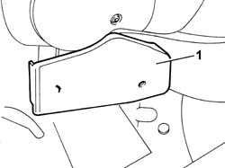
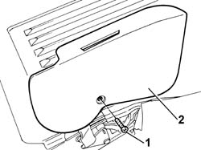
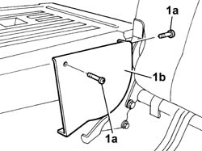
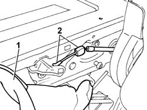
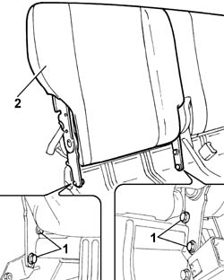

7050A15 SPLIT rear. seat RIGHT BACKREST- R.R.
- Path
- Procedures > 70 FITTINGS > 7050 REAR SEATS > 7050A rear seat assembly > 7050A15 SPLIT rear. seat RIGHT BACKREST- R.R.
- Kind
- repair procedure (removal / refitting; the operation number is the code)
- Applies to
- all engines; all production periods
- Interactive page
- https://sloeber94.github.io/elrnDB-fPnd/en/#/2753264
Applies to: all engines; all production periods
 Removing
Removing
 Refitting
Refitting7050B10 l/h or r/h head restraint (one) of rear seat - r+r
7050C05 Single sliding REAR SEAT with split folding squab - R.R .
7050C11 Single CUSHION of sliding rear seat - S.R.
1. Remove the lower side joint cover for the rear seat with split backrest which is a press fit with internal retaining tabs.

Applies to: all engines; all production periods
1. Undo retaining bolts.
2. Remove the upper side joint cover releasing the luggage compartment backrest folding control.

Applies to: all engines; all production periods
Working on the luggage compartment backrest folding control, fold the backrest downwards.
1. Undo the fixing bolts (1a) and remove the centre joint cover (1b) for one of the split backrests.

Applies to: all engines; all production periods
1. Partly lift up the folding backrest cover and upholstery in order to gain access to the folding locking/release cable.
2. Disconnect the cable from the backrest at the points shown.

Applies to: all engines; all production periods
Working on the luggage compartment folding control, lift up the backrest.
1. Undo the bolts fixing the backrest to the cushion frame.
2. Remove the right backrest for the split rear seat.

Applies to: all engines; all production periods
Refitting
RemovingFit the right backrest assembly in the cushion frame housing.
Screw in the bolts fixing the right backrest and then tighten to torque.
Connect the folding locking/release cable to the backrest.
Restore the folding backrest cover and upholstery to their original position.
Fit the centre joint cover for the split backrest and tighten the fixing bolts.
Fit the upper side joint cover and tighten the fixing bolt.
Fit the side joint cover for the rear seat with a split backrest, press fitting it.
Check the operation of the folding device.
7050C11 Single CUSHION of sliding rear seat - S.R.
7050C05 Single sliding REAR SEAT with split folding squab - R.R .
Topics linked from this page (4)
- 7040H80 parcel rack
- 7050B10 l/h or r/h head restraint (one) of rear seat - r+r
- 7050C05 Single sliding REAR SEAT with split folding squab - R.R .
- 7050C11 Single CUSHION of sliding rear seat - S.R.